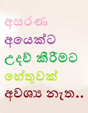
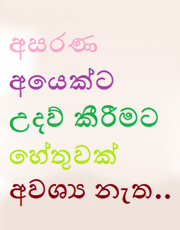
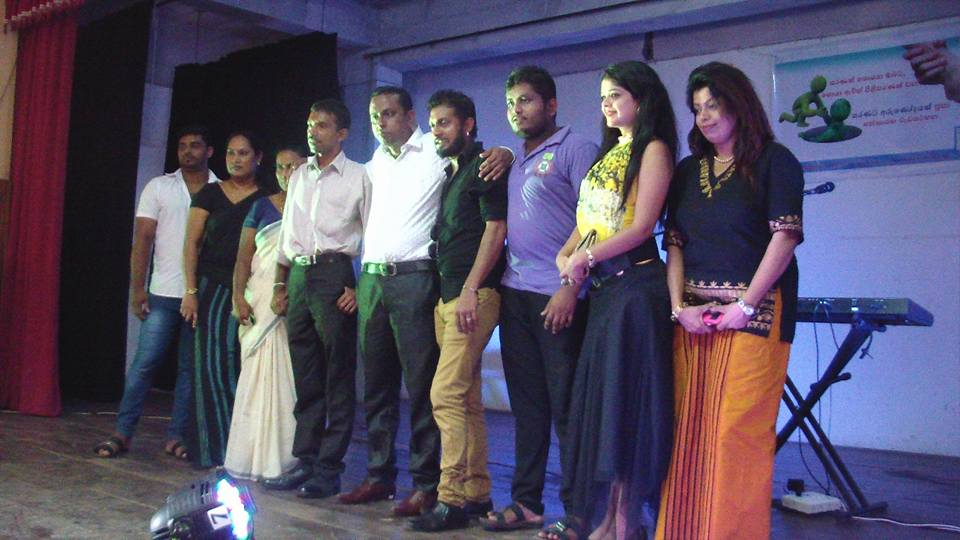

සරණට
අරුණෝදයක්
ප්රජා සත්කාරක පදනම


පදනමේ තතු
අළුත් ලිපි
- ග්රාමීය ක්රීඩා දක්ශතා ඇති දරුවන්ගේ දක්ශතා ඔප්නැංවීම
- මනස සෙමින් වර්ධනය වන දරුවන් උදෙසා ඔවුන්ගේ කලාකාමි දක්ශතා විදහා දැක්වීමට අවකාශය ලබා දීම
- සරණට අරුණෝදයක් ප්රජා සත්කාරක පදනමට හමු වූ තවත් දක්ශ දියණියක්
- අඩු ආදායම් සහිත පවුල් වල ජීවන තත්වය නඟා සිටුවීමට දායක වීම
- බෝධි පූජා පිංකම් පැවැත්වීම
 


සිදු කළ ව්යාපෘති
-
ග්රාමීය ක්රීඩා දක්ශතා ඇති දරුවන්ගේ දක්ශතා ඔප්නැංවීම.........
සරණට අරුණෝදයක් ප්රජා සත්කාරක වැඩසටහන මගින් ග්රාමීය ක්රීඩා දක්ශතා ඇති දරුවන් සොයා ගිය ගමනේ දී හමු වු පුන්චි හපනිය නිර්මලී මදුශිකා
කැළයේ පිපුනු මල කැළයේම පරවන්නට ඉඩ නොදී ආර්ථික දුශ්කරතා මැද තම ක්රීඩා පුහුණුවීම් කළ පුන්චි හපනියට ඇගේ දක්ශතා ඔප්නන්වන්ට අපි හැකි උපරිමයෙන් දායක උනා. පාසල් මට්ටමෙන් ඉහලම දක්ශතා දැක්වු ඇය ජාත්යන්තර තලය දක්වා ගමන් කරවීමට දායක වෙන්න අපිට පුළුවන් උනා.දකුණු පළාතේ පිටිසර ගමක උපන් ඇය චීනයේ නන්ජින්ග් නුවර පවත්වනු ලැබූ ආසියානු මළල ක්රීඩා උළෙලේදී ලොකඩ පදක්කමක් දිනා ගනිමින් ශ්රි ලංකා මාතාවට කීර්තියක් ලබා දුන්නා.
මෙවැනි දරුවන්ට අත හිත දෙන්න ඔබත් කැමතිනන් ඔබත් සරණට අරුණෝදයක් ප්රජා සත්කාරක වැඩසටහන සමඟ එකතු වෙන්න පුළුවන්.... කැළයේ පිපුණු මල් කැලයේම පරවන්නට ඉඩ නොදි ලොවටම සුවඳ විහිදුවන්නට ඉඩ සළසමු.
මෙම දරුවන්ට ඔවුන්ගේ කලාකාමි දක්ශතා විදහා දැක්වීමට අපගේ පදනම මගින් අවකාශය ලබා දුන්නෙමු.....
මේ එම අවස්ථාවේ දී ලබාගත් මතක සටහන් කිහිපයකි.
-
මනස සෙමින් වර්ධනය වන දරුවන් උදෙසා ඔවුන්ගේ කලාකාමි දක්ශතා විදහා දැක්වීමට අවකාශය ලබා දීම.....
මෙම දරුවන්ගේ මනස සෙමින් වර්ධනය නිසා ඔවුන්ට පූර්ණ මිනිසුන් / සාමාන්ය මිනිසුන් ලෙස කටයුතු කල නොහැක. නමුත් මෙම දරුවන් සතුව විවිධ කුසලතා රැසක් ඇත. මෙවැනි දරුවන් නොසලකා හැර නොදමා ඔවුන්ටත් ඔවුන්ගේ දක්ශතා එලි දක්වන්නට අවස්ථාව ලබා දීම ඔබ අප සැමගේ යුතුකමකි....
-

සරණට අරුණෝදයක් ප්රජා සත්කාරක පදනමට හමු වූ තවත් දක්ශ දියණියක්..
මෙම දියණියගේ මනස වර්ධනය වන වේගය සාමන්ය අපගේ මනස වර්ධන වේගයට වඩා අඩු ය. නමුත් ඇය සතු දක්ශතා අනන්තයි. සරණට අරුණෝදයක් ප්රජා සත්කාරක පදනම මගින් මෙමෙ දියණියට ඇයගේ දක්ශතා දියුණු කරගැනීමට අවශ්ය පහසුකම් සපයන ලදී. ඇය රටවල් 23 ක සහභාගීත්වයෙන් ඔස්ට්රේලියාවෙදී පැවති තරඟාවලියේදී බූසෝ තරඟ ඉසව්වෙන් 3 වන ස්ථානය දිනාගෙන් සිය මව් බිමට කීර්තියක් ලබා දුන්නා ය.
-
අඩු ආදායම් සහිත පවුල් වල ජීවන තත්වය නඟා සිටුවීමට දායක වීම
අඩු ආදායම් සහිත පවුල් වල රැකියාවක් නොකරන පුද්ගලයින් තෝරාගෙන ඔවුන්ව ස්වයං රැකියාවලට යොමු කිරීම මෙහිදී සිදු කෙරෙනු ලැබේ. සබන් නිශ්පාදනය කිරීම, බිම්මල් වගාව, කොම්පොස්ට් පොහොර නිපදවීම, හදුන්කූරු නිශපාදනය, කොරටු වගාව ඇතුළු විශාල ස්වයං රැකියා ප්රමාණයක් සදහා අප පදනම මගින් ඔවුන්ට උපදේශන හා පහසුකම් සපයා දෙනු ලැබේ.
-

බෝධි පූජා පිංකම් පැවැත්වීම
සියළුම ශ්රී ලාංකික පුරවැසියන්ට හා රටා සෙත ශාන්තිය පතා වාර්ෂිකව බෝධි පූජා පිංකම් සිදු කරනු ලැබේ.අප පදනමේ කාර්යමණ්ඩලයේ සමාජික සාමාජිකාවන් ද , ප්රතිලාභී පවුල් වල සාමාජික සාමාජිකාවන්ද , අපගේ පදනමට සහයෝගය ලබා දෙන අනුග්රහකයින්ද ඇතුළු විශාල පිරිසක් සෑම වසරේදීම මෙම උතුම් කර්තව්ය සිදු කීරීමට දායක වේ.
පාසල් හැරගිය තරුණ තරුණියන්ට රැකියා අවස්ථා වලට අදාළ පාඨමාලා පැවැත්වීම
මෙම වැඩසටහන පාසල් හැරගිය තරුණ තරුණියන් මුල් කරගෙන පවත්වනු ලැබේ. රූපලාවන්ය පාඨමාලා, නිවේදනය හැදෑරීමේ පාඨමාලා, ගුවන්විදුලි හා රූපවාහිනී අළුත්වැඩියාව පිලිබඳ පාඨමාලා , බල්බ් සෑදීමේ පාඨමාලා ඇතුළු පාඨමාලා රැසකට සරණට අරුණෝදයක් පදනම මගින් දායකත්වය සපයනු ලැබේ.